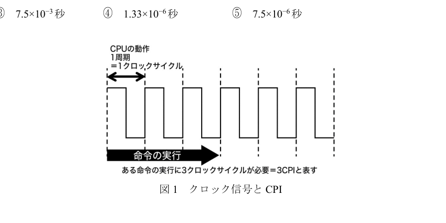

問4：クロック周波数と処理時間
正解: ④
[問題PDFを開く] [解答PDFを開く] (問4は問題PDFの3ページ、解答PDFの2ページ目です)
ポイント解説
クロック周波数は、CPUが1秒間に何回動作のタイミングをとるか（クロックサイクルが何回発生するか）を示す値です。単位はHz（ヘルツ）です。 この問題は、クロック周波数から、1クロックサイクルにかかる時間を計算するものです。
計算方法
1クロックにかかる時間は、クロック周波数の逆数で求められます。
CPU「4004」のクロック周波数は 750kHz です。
- まず、単位をHzに直します。
750 kHz = 750 × 1,000 Hz = 750,000 Hz -
次に、逆数をとって1クロックあたりの時間を計算します。
時間 = 1 / 750,000 秒 - これを計算すると、約 0.00000133 秒 となります。
- 選択肢に合わせて指数表記にすると、1.33 × 10-6 秒 となります。